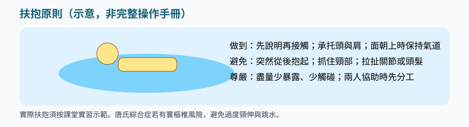
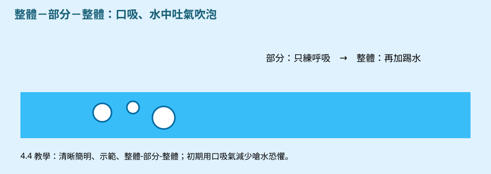
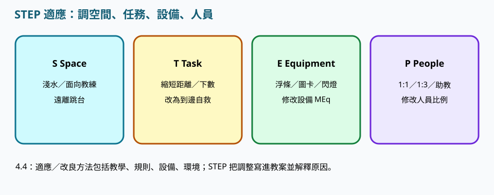

禁跳水、護寰椎、短時休息。
類別 · 2.3
請依序研讀導讀、重點與池邊準則，聽粵語說明，再以練習核對理解。
本網站根據課程講義、課堂分享與溝通工具筆記整理，供未能出席面授的學員系統研讀。不能代替醫療診斷、法律意見、課堂實習或面授扶抱示範。涉及健康、用藥、脊柱或癲癇等情況，須按家長／醫護文件執行。
唐氏綜合症常見肌張力低、關節較鬆、心肺耐力不足。課前核對心臟與頸椎文件；醫護提示寰樞椎不穩時，禁止跳水、滾翻與過度頸伸。
研讀次序：重點 → 粵語說明 → 本單元練習 → 下一單元「感覺統合障礙」。


講義出處：2.3 唐氏綜合症 · 身體特點
課堂情境
學員肌張力偏低，直立打水很快氣促。
教學原則
肌張力較低、關節較鬆、心肺耐力與肌耐力常不足；低衝擊有氧對肌力、身體組成與有氧能力有文獻支持，但進度要慢。
池邊執行
以仰浮及短組重複為主，組間充分休息，不宜連續高強度。
講義出處：2.3 唐氏綜合症 · 健康注意
課堂情境
學員鼻塞咳嗽仍被帶來上課。
教學原則
上呼吸道較易感染，課前問近況；部分人士有先天性心臟問題，須有醫生／家長書面許可；若醫護提示寰樞椎不穩，避免跳水、滾翻及過度頸伸。
池邊執行
無許可或感冒徵象就改岸上視覺課或停課，絕對不宜跳水或大力屈伸頸部。
講義出處：2.3 唐氏綜合症 · 學習與社交
課堂情境
學員善於社交微笑，教師以為他已明白安全規則。
教學原則
常享受例行與模仿，口語可能較慢，視覺示範與短句有效；容易取悅他人，教師仍要教「停止／休息」自主表達。
池邊執行
以模仿與歌曲建立常規，並練習遞「停／休息」卡，不宜只鼓勵「再忍一下」。
講義出處：2.3 唐氏綜合症 · 教學
課堂情境
學員嘴唇發紺或明顯畏寒，教師仍想完成里程碑。
教學原則
充分休息、注意嘴唇發紺或寒冷徵象；多用仰浮建立安全感；力量訓練以水中為主，避免猛力拉手臂。
池邊執行
見到發紺、寒冷即上水保暖；拉手改為承托軀幹。
講義出處：2.3 唐氏綜合症 · 青少年唐氏與 STEP
課堂情境
青少年想跟朋友去跳台。
教學原則
Space 暖淺水禁跳台；Task 短時多次、到邊自救；Equipment 浮條不拉腕；People 新手 1:1–1:3。
池邊執行
課前問上呼吸道與心肺文件。

講義出處：2.3 唐氏綜合症 · 寰樞椎與關節鬆弛
課堂情境
有人提議用滾翻熱身。
教學原則
若醫護提示寰椎不穩，避免跳水、滾翻、過度頸伸；關節過度活動受傷風險較高。
池邊執行
教案備註必須填寫，禁止猛力牽拉。
肌張力低寰樞椎不穩hypotonia 低張atlantoaxial instability
三題判斷：下列做法是否符合本單元池邊準則。
以下與本頁錄音同一份講稿。建議先讀重點，再聽說明，把判斷次序聽清楚。